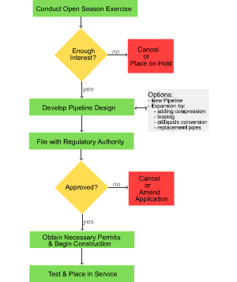

|
About U.S. Natural Gas Pipelines - Transporting Natural
Gas
based on data through 2007/2008 with selected updates |
|||
|---|---|---|---|
|
Timing and Steps for a New Project An interstate natural gas pipeline construction or expansion project takes an average of about three years from the time it is first announced until the new pipe is placed in service. The project can take longer if it encounters major environmental obstacles or public opposition. A pipeline development or expansion project involves several steps:
Determining Market Interest and Public Announcement To gauge the level of market interest, an open season is held for 1-2 months, giving potential customers an opportunity to enter into a nonbinding agreement to sign up for a portion of the capacity rights that will be available. If enough interest is shown during the open season, the sponsors will develop a preliminary project design and move forward. If not enough interest is evident, the project will most likely be dropped or placed on indefinite hold. Expansion and Development Options Options for creating additional pipeline capacity include:
Obtaining Construction Approval Developing the final project design and obtaining first financial commitments from potential customers may take from three to six months. Then, the project specifications are filed with the appropriate regulatory agency. If the proposed project involves an interstate pipeline, that is, it falls under the jurisdiction of the Federal Energy Regulatory Commission (FERC), the project sponsor has the option of either requesting that a National Environmental Policy Act (NEPA) pre-filing review be initiated during the early states of project design, or waiting until later and filing with FERC under the traditional application review process. |
Development and Expansion Process
 click to enlarge
|
||
The pre-filing process is designed to facilitate and expedite the review of natural gas pipeline projects that would normally require FERC to prepare an environmental assessment, an environmental impact statement, or a historic preservation review as part of the traditional review process. The project sponsor must notify and request that the various regulatory agencies be involved in evaluating the project if a pre-filing review from NEPA is filed. In this case, FERC staff will take the lead in scheduling and coordinating the approval steps. Approval of the Regulating Authority A FERC review of an interstate pipeline project takes from 5-18 months, with an average time of 15 months. No data are available on the average time for obtaining approval from an individual State agency. Usually, approval by the regulating authority is conditional, but most often the conditions do not constitute a significant impediment. The project sponsor must then either accept or reject the conditions or reapply with an alternative plan. Pipeline construction is usually completed within 18 months and sometimes in as little as 6 months. Construction can be delayed because additional time may be needed to acquire local permits from towns and land-use agencies located along the proposed construction route. Commissioning and testing the completed pipeline project usually takes about one to three weeks. This process involves subjecting the new segments of the pipeline to hydrostatic testing (water fill under high pressure) or other tests of the line in-place. Line packing, which involves filling the line with the initial baseload volume of natural gas, is usually needed only on a new pipeline or on larger expansion projects. |
|||